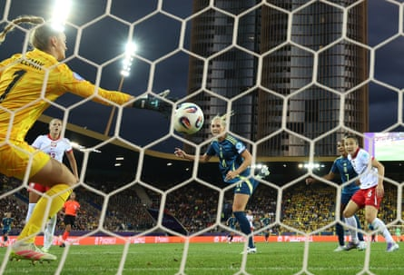

This was further evidence that Sweden should be taken seriously. A squad rich in depth and top-level experience are gathering steam and look a nightmarish proposition for whoever is sent their way in the quarter-finals. They will top Group C by avoiding defeat against Germany on Saturday and, with the obvious exception of Spain , have looked at least as convincing as anyone on show so far this summer.
Make no mistake, they will have to pass far tougher tests than the obstacle posed by a limited Poland. The tournament debutants will play for pride in their meeting with Denmark and almost grasped a huge chunk of it here when Milena Kokosz cracked a stupendous strike against the post in added time. In truth, though, Sweden could have doubled their tally at a minimum. They were relentless, thrillingly so at times, and the only concern for Peter Gerhardsson may be that his players were not more clinical.
Not that he was too willing to voice it. “A great performance,” he said. “We scored some great goals and we created a lot of chances, and our defence was really good.” Their opponents were certainly unable to muster much of the counterattacking threat that had occasionally flustered Germany .
Poland had held the Germans at bay for more than half of their opener but that never looked remotely likely here. They could not handle Sweden’s movement and, in particular, the speed and balance of the Chelsea winger Johanna Rytting Kaneryd. Her performance on the right was a firm contender for the best individual display of the past week, an early run and cross that Kosovare Asllani headed against the crossbar setting the tone. Within 13 minutes Madelen Janogy’s effort met a similar fate and, as more opportunities came and went, it resembled a minor miracle that Poland remained unbreached towards the half-hour mark.
Stina Blackstenius heads home Sweden’s opening goal of the night.Photograph: Matthew Childs/Reuters
That had partly owed to a miss from Stina Blackstenius, who flashed off target at the near post after a dart from midfield by Filippa Angeldahl. She was more on point when Angeldahl, who was behind much of Sweden’s best work, located an intelligent run from Asllani. The captain’s chipped cross was thundered in on the run by Blackstenius and the torment rarely let up from there.
Blackstenius could have scored two more before the interval but the contest remained faintly alive. It was put to bed in response to the briefest of Poland flurries, the combination of Rytting Kaneryd and Asllani this time yielding a decisive finish past the busy Kinga Szemik. “It doesn’t happen that often,” Asllani said of her header, but telling interventions from a player who turns 36 later this month invariably do.
The mini rout was completed by Lina Hurtig, who rose to nod in a corner from her fellow substitute Jonna Andersson. Just before that, Gerhardsson had given Frida Rolfö her first action of Euro 2025. Magda Eriksson is also yet to be involved and it speaks volumes for the tools at his disposal. There is plenty still in reserve, not that Sweden’s showing needed much of a pick-me-up.
It was enough to delight their customary strong support, who had illuminated a grey and cloudy Lucerne for most of the day. They far outnumbered their Polish counterparts although a word should be reserved for the respectable red and white-clad contingent who were vocal throughout. This sport runs through the blood in Sweden; in Poland the journey has been longer but the progress is clear and Nina Patalon could reflect on the importance of her side’s debut at the top level.
“I’m not disappointed,” she said. “If we want to beat the best we need to keep working. I know how hard we worked to be here. Women’s football in Poland will improve thanks to those girls who were on the pitch.” For now, Sweden are further along a road that could yet conclude with a historic night in Basel.